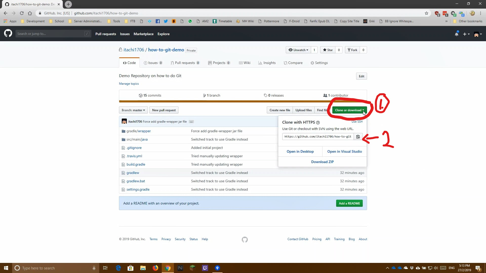
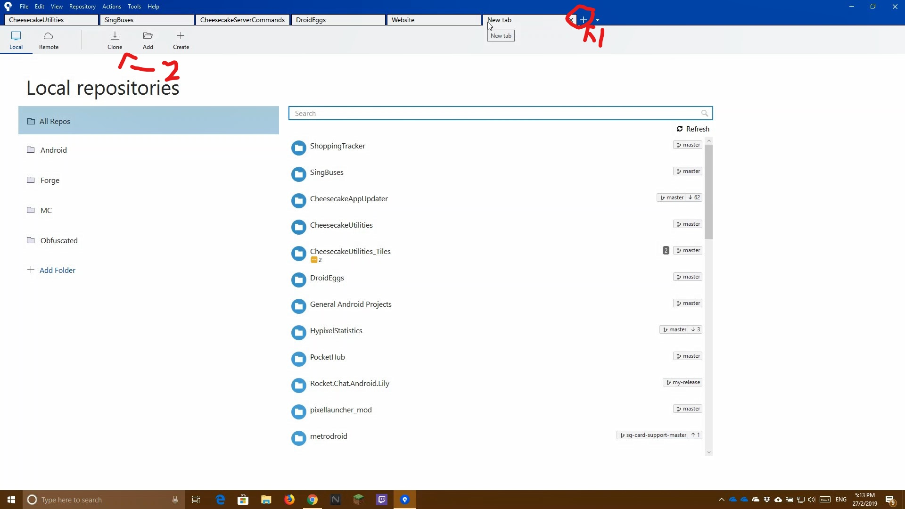
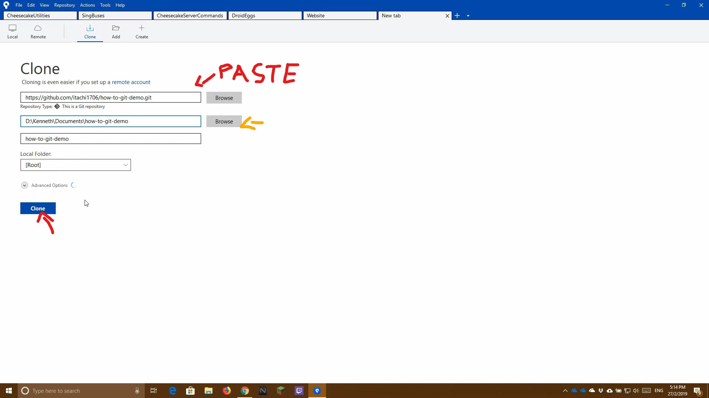

The following steps teaches you how to clone a GitHub Repository onto your local machine
Go to the GitHub Repository and click on Clone or download
Copy the URL by clicking on the button on the right of the URL

Go to SourceTree and press the + button at the tab list, then press Clone

Paste the URL onto the Source Path/URL field and wait for it to finish loading. Then press Clone Optionally, define the directory where you want your project files to be located at (yellow arrow)

Wait for it to finish loading and you are done!
Demo Video The following is a video on how this is being done. Read the how-to guide before watching the video for actual steps to do it
Console Commands Used
git clone "URL to git repository" # Clones the repository